Glossary
259 terms — indicators, formulas, reward functions, statistics, and the project's own coinages, drawn from the book's Complete Glossary and Master Indicator Encyclopedia. Hover a term anywhere in the explorer to preview; click through to here.
#Letters
- +DI (Positive Directional)+DI, Positive Directional
- Uptrend strength component
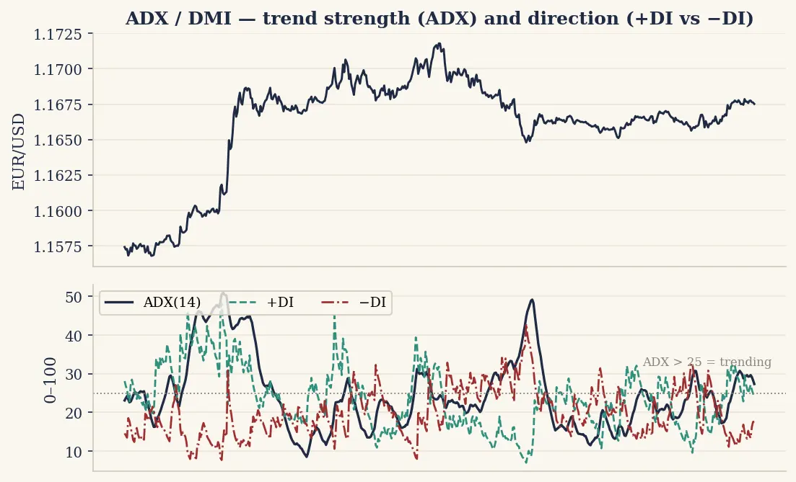
ADX(14) trend strength with +DI / −DI directional lines; ADX above 25 marks a trending regime. Shown with related directional features. - -DI (Negative Directional)-DI, Negative Directional
- Downtrend strength component
Show the chart
ADX(14) trend strength with +DI / −DI directional lines; ADX above 25 marks a trending regime. Shown with related directional features. - 16-State Market Regime
- Full market state across 20 FX pairs simultaneously. 16 regime categories from combinations.
- 4-Quadrant Market Regime
- 0=low vol+low dir (dead), 1=high vol+low dir (choppy), 2=low vol+high dir (trending quiet), 3=high vol+high dir (trending loud)
- 4-Regime Normalization
- Different normalization windows and methods applied depending on detected market regime.
ALetters
- Accumulated Drawdown (AMDDP)Accumulated Drawdown
- Cumulative measure of how much the trade has wandered underwater. Increases on every underwater bar, not only when DD deepens.
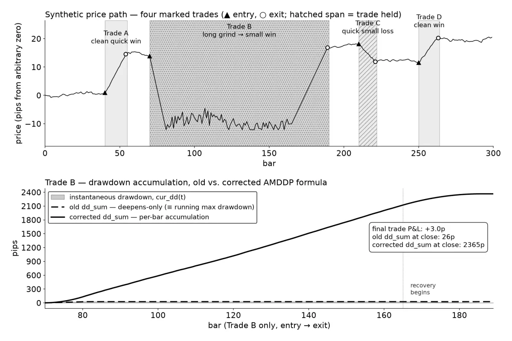
How accumulated max-drawdown-pips (AMDDP) builds per bar while under water — the penalty behind the drawdown-aware fitness. Shown for a worked trade. - Accumulative Swing Index (ASI)Accumulative Swing Index, ASI
- Wilder's 1978 swing-momentum indicator: a running, volatility-normalized sum of bar-to-bar swing increments (ASI = Σ SI), where each increment scales the bar's move by how decisively it moved relative to its own range and to a limit move of 3 × ATR. It behaves like a smoothed, momentum-weighted price, filtering the jitter that raw price carries — which is why swing detection on ASI is cleaner than on price itself.
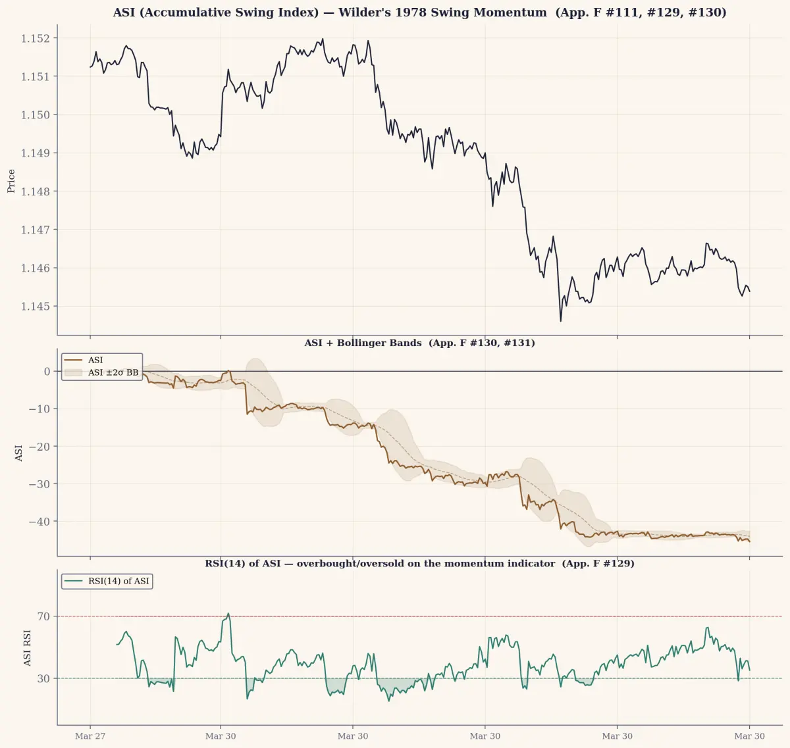
Wilder's Accumulative Swing Index — a running swing-momentum line — with Bollinger bands on the ASI and RSI-of-ASI. Shown with related ASI derivatives. - Adverse selection
- The systematic tendency for the orders that actually fill to be the ones moving against you. In grid trading it turns a favorable-looking win probability into a slow bleed.
- ADX (Average Directional Index)Average Directional Index
- Trend strength (>25 trending, <20 ranging)
Show the chart
ADX(14) trend strength with +DI / −DI directional lines; ADX above 25 marks a trending regime. Shown with related directional features. - ADX / ADXRADX, ADXR
- Average Directional Index (Wilder): a 0–100 measure of trend strength (not direction), above ~25 trending, below ~20 ranging. ADXR is the smoothed average of ADX with its value 14 bars ago, used as the trend term inside the Commodity Selection Index.
Show the chart
ADX(14) trend strength with +DI / −DI directional lines; ADX above 25 marks a trending regime. Shown with related directional features. - ADX/DMI (KSQL Streaming)
- Real-time streaming DMI from 5-second bars.
Show the chart
ADX(14) trend strength with +DI / −DI directional lines; ADX above 25 marks a trending regime. Shown with related directional features. - ADXR (ADX Rating)ADX Rating
- Smoothed ADX for cross-sectional ranking
Show the chart
ADX(14) trend strength with +DI / −DI directional lines; ADX above 25 marks a trending regime. Shown with related directional features. - AMDDP (Accum. Max-Drawdown-Pips)Accum. Max-Drawdown-Pips
- Penalizes trades that wander deep underwater, and penalizes them more the longer they loiter there
Show the chart
How accumulated max-drawdown-pips (AMDDP) builds per bar while under water — the penalty behind the drawdown-aware fitness. Shown for a worked trade. - AMDDP (AMDDP1 / AMDDP5 / AMDDP10)AMDDP, AMDDP1, AMDDP5, AMDDP10
- Accumulated-Maximum-Drawdown-Pips, the one reward function designed inside this project. It is profit minus a penalty for the pain a trade inflicted on the way: AMDDP_k = pnl_pips − β · dd_sum, where dd_sum accrues on every bar the trade sits underwater, deepening or static, not only the bars where the drawdown gets worse. The suffix is the penalty weight as a percentage, so β = N/100: AMDDP1 = β 0.01, AMDDP5 = β 0.05, AMDDP10 = β 0.10. A profit-protection floor keeps a winning trade from ever being penalized into looking like a loss. AMDDP5 scored the project's one clean positive result, the +14,440-pip sine-wave positive control.
Show the chart
How accumulated max-drawdown-pips (AMDDP) builds per bar while under water — the penalty behind the drawdown-aware fitness. Shown for a worked trade. - Aroon
- A trend indicator reading how recently the highest high and lowest low occurred within a window, each scaled 0–100; a high Aroon-Up means a recent new high.
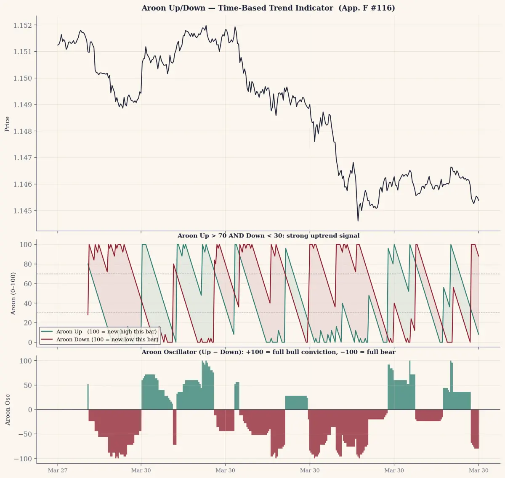
Aroon Up/Down (bars since the window's high/low) and the Aroon Oscillator (Up − Down). - Aroon (Up/Down)Up, Down
- Time since highest high / lowest low as percentage. Aroon_Up near 100 = recent new high (bullish).
Show the chart
Aroon Up/Down (bars since the window's high/low) and the Aroon Oscillator (Up − Down). - ASI (Accumulative Swing Index)
- Cumulative swing momentum (Wilder 1978)
Show the chart
Wilder's Accumulative Swing Index — a running swing-momentum line — with Bollinger bands on the ASI and RSI-of-ASI. Shown with related ASI derivatives. - ASI (KSQL Streaming)KSQL Streaming
- Real-time streaming ASI from 5-second bars via Kafka/KSQL. Earliest implementation.
Show the chart
Wilder's Accumulative Swing Index — a running swing-momentum line — with Bollinger bands on the ASI and RSI-of-ASI. Shown with related ASI derivatives. - ASI Acceleration
- Swing momentum change-of-change
Show the chart
Wilder's Accumulative Swing Index — a running swing-momentum line — with Bollinger bands on the ASI and RSI-of-ASI. Shown with related ASI derivatives. - ASI BB Position
- Where ASI sits within its own Bollinger Bands. Position near 0 or 1 = ASI at extreme.
Show the chart
Wilder's Accumulative Swing Index — a running swing-momentum line — with Bollinger bands on the ASI and RSI-of-ASI. Shown with related ASI derivatives. - ASI BB Width
- Volatility of the ASI itself — narrow = ASI consolidating, wide = ASI trending strongly
Show the chart
Wilder's Accumulative Swing Index — a running swing-momentum line — with Bollinger bands on the ASI and RSI-of-ASI. Shown with related ASI derivatives. - ASI RSI(14)ASI RSI
- RSI of the Accumulative Swing Index — overbought/oversold on the momentum indicator itself
Show the chart
Wilder's Accumulative Swing Index — a running swing-momentum line — with Bollinger bands on the ASI and RSI-of-ASI. Shown with related ASI derivatives. - ASI Slope
- Rate of change of swing momentum
Show the chart
Wilder's Accumulative Swing Index — a running swing-momentum line — with Bollinger bands on the ASI and RSI-of-ASI. Shown with related ASI derivatives. - ASI Swing Regime (4-channel one-hot)ASI Swing Regime, 4-channel one-hot
- calculate_asi_swing_pattern_regime_with_filtered_points(). Regime from ASI-derived swing points. Outputs: swing_regime_uptrend (HHHL), swing_regime_downtrend (LHLL), swing_regime_bullish_divergence (HHLL), swing_regime_bearish_divergence (LHHL).
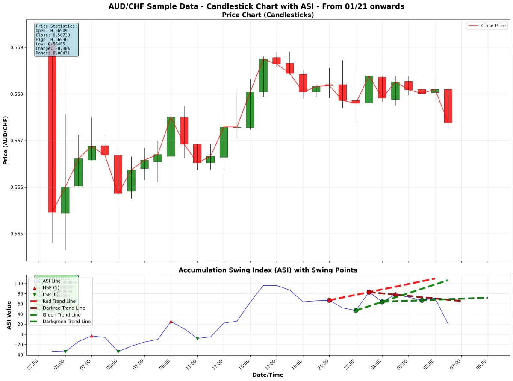
ASI with detected swing points and the trendlines drawn through successive high/low swing points. - ASI USD-Normalized
- Cross-pair-comparable ASI: normalizes swing index to USD terms for multi-pair context
Show the chart
Wilder's Accumulative Swing Index — a running swing-momentum line — with Bollinger bands on the ASI and RSI-of-ASI. Shown with related ASI derivatives. - ASI Variants (Wilder)ASI Variants, Wilder
- Advanced momentum/swing analysis
Show the chart
Wilder's Accumulative Swing Index — a running swing-momentum line — with Bollinger bands on the ASI and RSI-of-ASI. Shown with related ASI derivatives. - Asian Range Percentile
- Position within Asian range; entry trigger
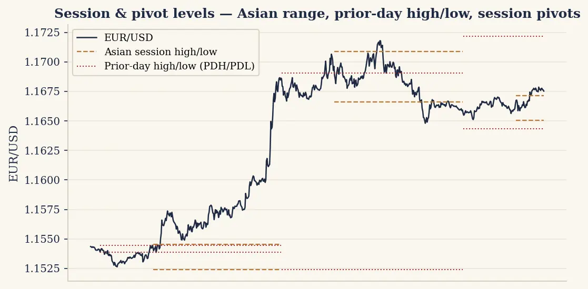
Intraday price with the Asian-session range, prior-day high/low and session pivots drawn forward. Shown with related session levels. - Asian Session High
- Upper bound of Asian range; fade target
Show the chart
Intraday price with the Asian-session range, prior-day high/low and session pivots drawn forward. Shown with related session levels. - Asian Session Low
- Lower bound of Asian range; fade target
Show the chart
Intraday price with the Asian-session range, prior-day high/low and session pivots drawn forward. Shown with related session levels. - ASIMCmc_d, mc_dd
- Not four indicators but one composite pipeline: ASI → SMA(5) → MC(D) and MC(dD). Raw OHLC goes in; a pair of bounded momentum numbers comes out (level and rate-of-change of the smoothed series). It was the central feature for the NEAT and MuZero work — and the multi-timeframe version is exactly where the Part III lookahead bug lived (see lookahead bias, Monte-Carlo).
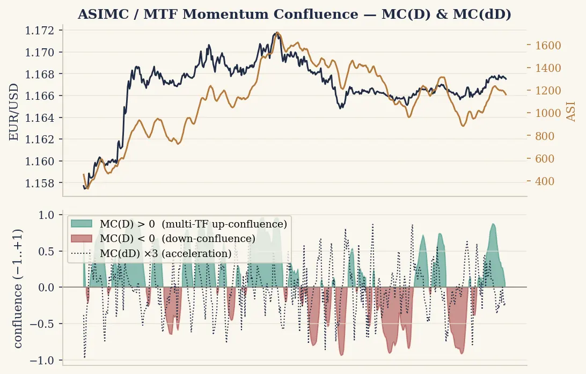
ASI → SMA(5) with the multi-timeframe momentum confluence MC(D) (agreement of ASI slope across scales) and its acceleration MC(dD). - ATR (7, 14)7, 14
- Average true range over n bars; the project's sizing baseline for TP/SL. ATR(14) is the standard used unchanged in every live system; ATR(7) is the faster, noisier variant used in the Exit Bot and Hurst work for regime-sensitive scalps.
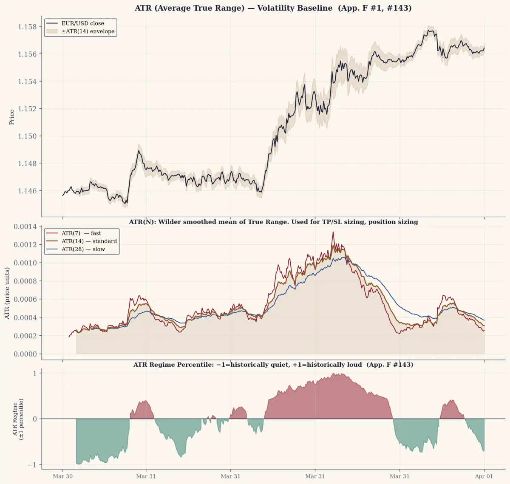
ATR(7/14/28) as the Wilder-smoothed mean of True Range, with the price envelope and the historical quiet/loud regime percentile. - ATR (Average True Range)ATR, Average True Range
- Wilder's volatility measure: the moving average of the true range (the bar's range, extended to include any gap from the prior close), reported in pips. The sizing baseline for most take-profits and stops in this project.
Show the chart
ATR(7/14/28) as the Wilder-smoothed mean of True Range, with the price envelope and the historical quiet/loud regime percentile. - ATR Percentile
- Volatility regime gate (P20-P90 for Impulse)
Show the chart
ATR(7/14/28) as the Wilder-smoothed mean of True Range, with the price envelope and the historical quiet/loud regime percentile. - AUC
- Area Under the ROC Curve, where ROC is the receiver operating characteristic — a plot, named by wartime radar engineers, of true-positive rate against false-positive rate at every decision threshold. A 0-to-1 score for how well a model separates two classes: 0.5 is random guessing, 1.0 is perfect, 0.7 or above is real signal. The shock-timing models reached 0.73–0.88.
BLetters
- Backtest
- Running a strategy against historical prices to see how it would have done. The most seductive and most easily fooled instrument in the discipline.
- Bands on Derived Metrics
- Enhanced S/R from derived metric envelopes
- Bars Held
- Time in trade; urgency signal
- BB Position (centered)BB Position, centered
- Position within Bollinger Bands: 0=at SMA, ±0.5=at bands, beyond ±0.5=outside bands
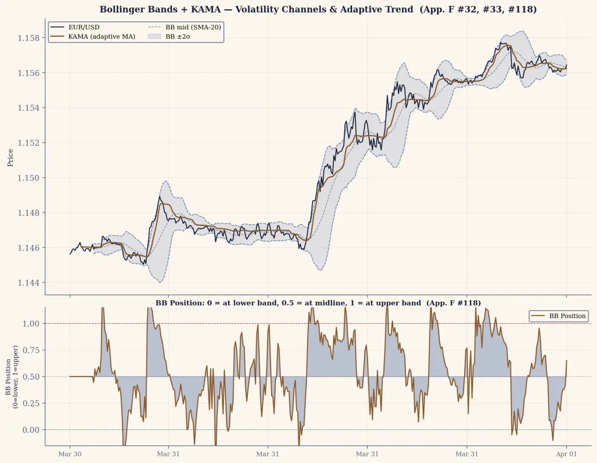
Bollinger Bands ±2σ and the adaptive KAMA trend line, plus BB position (0 = lower band, 1 = upper). Shown with related MA/band overlays. - BB Width (BBW)BB Width, BBW, bb_width, Bollinger Band Width
- Volatility regime (squeeze = low BBW percentile)
Show the chart
Bollinger Bands ±2σ and the adaptive KAMA trend line, plus BB position (0 = lower band, 1 = upper). Shown with related MA/band overlays. - Bollinger BandsBB
- A band drawn at a moving-average center plus and minus a multiple (usually 2) of the price standard deviation, so the band widens with volatility. BB position maps where price sits inside the band to a bounded number for model input.
Show the chart
Bollinger Bands ±2σ and the adaptive KAMA trend line, plus BB position (0 = lower band, 1 = upper). Shown with related MA/band overlays. - Bollinger Bands(20, 2.0)20, 2.0
- Range extremes, squeeze detection
Show the chart
Bollinger Bands ±2σ and the adaptive KAMA trend line, plus BB position (0 = lower band, 1 = upper). Shown with related MA/band overlays.
CLetters
- Candle Direction
- Trade direction selector (long if bullish, short if bearish)
- Candle Size
- Individual bar range; entry signal when > ATR(14) on both M5 AND H1
- Capture ratio
- A reward measure: PnL / (MFE + ε), clipped to [−2, +2]. It is the share of a trade's best opportunity that the exit actually banked — 1.0 means the trade closed exactly at its peak, below 1.0 means profit was given back, below zero means it closed underwater. Rewards good exit timing.
- Capture Ratio (real-time)real-time
- How much of the best opportunity we're capturing RIGHT NOW. 1.0 = holding at peak, <1 = gave back profit, <0 = underwater.
- CAR25
- Dr. Howard Bandy's 25th-percentile compound annual return — the return you'd still beat 75% of the time as position size scales; a probability-of-ruin-aware sizing test. Run the trade distribution through a Monte-Carlo of many equity paths, sort the annual returns, and read the 25th percentile: if it is negative at every size (as it was for account 010, Entry 66), there is no volume at which the strategy is safe to trade.
- Carry / rollover (financing)Carry, rollover, financing
- The interest credited or charged at the 17:00 New York rollover on any position held overnight, set by the interest-rate gap between the two currencies — at broker-set rates thinner than the interbank differential. It posts every trading day, but not evenly: a position held through one rollover per week (Wednesday's, at most brokers) is charged three days of interest in that single posting (spot settles two business days forward, so Wednesday's rollover crosses the weekend); nothing posts Saturday or Sunday. Invisible to an intraday backtest and decisive at a multi-day hold: it is the cost that net-refuted the regime-gated daily mean-reversion, the record's last surviving edge (Entry 58; see the Coda).
- CMA-ES
- Covariance Matrix Adaptation Evolution Strategy. A gradient-free optimizer for a fixed set of parameters (here, the weights of a fixed-topology network). It draws a population of candidates from a multivariate normal, scores them, then reshapes and reorients that distribution toward the directions that have been improving before drawing the next generation. It optimizes weights only — the network's architecture must be fixed in advance, which is the contrast with NEAT.
- Column Momentum
- P&F trend persistence; how many boxes in current column
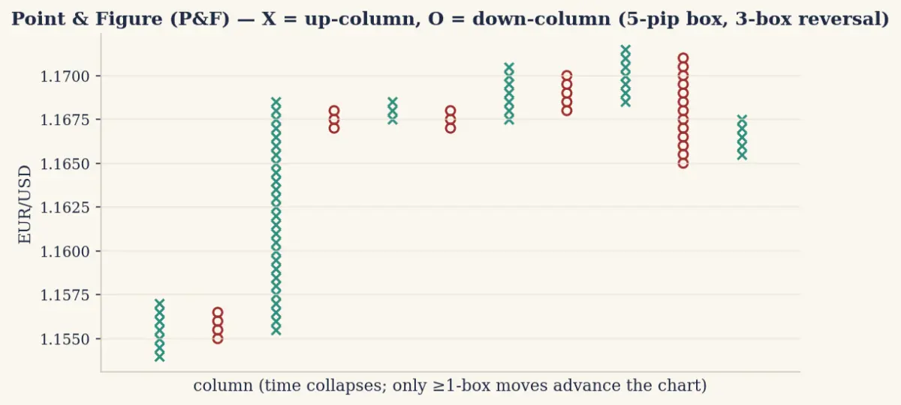
A Point & Figure chart: X = up-columns, O = down-columns, a new column only on a ≥3-box reversal — time is collapsed out. - Combo Geometric (range × position)Combo Geometric, range × position
- Non-linear interaction between volatility regime and range position.
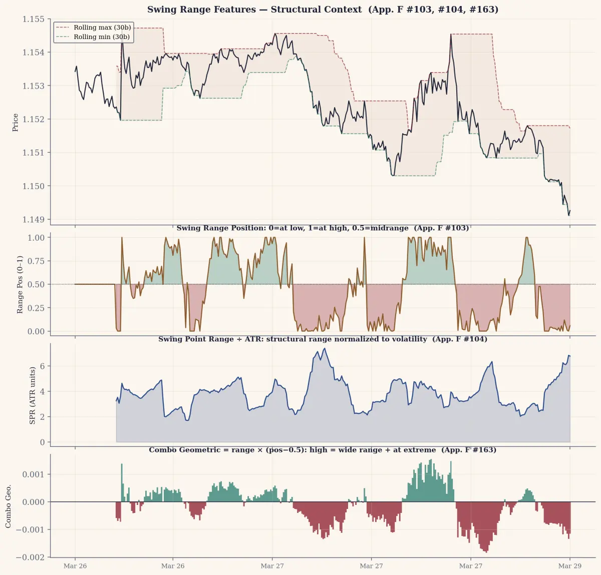
Swing-range position (0 = at low, 1 = at high), range ÷ ATR, and the combo-geometric = range × (pos − ½). Shown with related range features. - Consecutive Loss Count
- Skip 1 signal after 2 consecutive losses
- Cost-to-Volatility Ratio
- Scalping efficiency; lower = better opportunity
- COT (Commitments of Traders)COT, Commitments of Traders
- The weekly positioning report published by the CFTC, the US futures regulator: aggregate long and short futures positions by trader category (commercial hedgers, large speculators, small traders) as of each Tuesday, released Friday, covering the CME currency futures. The closest public thing to positioning truth in FX, used as a contrarian signal at extremes; its costs are the three-day publication lag and that it measures futures, not spot.
- Counter-trend / fadeCounter-trend, fade
- Trading against the direction of the prevailing move. A cousin of mean reversion, not a synonym: mean reversion trades toward a reference level (an average, a band, a fair value), while a counter-trend trade bets against the move itself — and when the reference is trending, the two point opposite ways. Buying a dip back to a rising average is mean-reverting and trend-aligned; shorting the uptrend is counter-trend, a bet that the average itself is about to turn. The two coincide only when the faded move is a short-lived stretch away from a roughly flat reference — which is what most of this book's fades are.
- CSI
- Commodity Selection Index (Wilder). Wilder's classic per-pair tradeability score, adapted for FX as CSI = ADXR × ATR_pips × (V/√M) × (1/(150+C)) × 100: it blends trendiness, opportunity size, and cost into one figure that ranks which pairs are worth trading. In this book bare CSI always means this indicator — its standard meaning in the technical-indicator literature. It shares its three letters with the project's per-currency currency-strength index (a single strength number per major currency, pooled across all the pairs it appears in, so you can pair the strong against the weak); to keep the two apart, the strength measure is always written out in full and never abbreviated. In this project's factor study every component of the Commodity Selection Index scored contrarian (IC below zero).
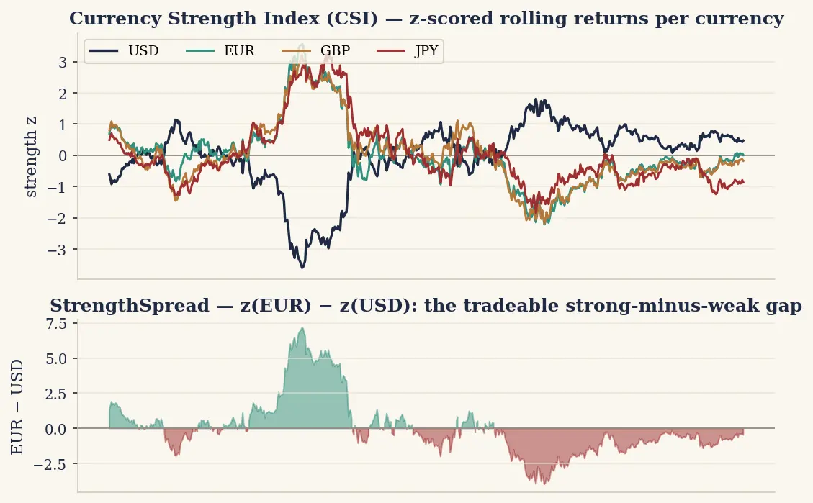
Per-currency strength z-scores (USD/EUR/GBP/JPY) from rolling returns and the EUR−USD StrengthSpread. Shown with related currency-strength features. - Currency pair
- A quoted exchange rate like EUR/USD. In FX you always buy one currency by selling another.
- Currency Rank (Top-3/Bot-3)Currency Rank, Top-3, Bot-3
- Entry: D1 top-3 × bottom-3 must agree with H1
Show the chart
Per-currency strength z-scores (USD/EUR/GBP/JPY) from rolling returns and the EUR−USD StrengthSpread. Shown with related currency-strength features. - Currency Strength Spread
- Cross-sectional relative value
Show the chart
Per-currency strength z-scores (USD/EUR/GBP/JPY) from rolling returns and the EUR−USD StrengthSpread. Shown with related currency-strength features. - Current Drawdown
- Current underwater distance from entry. Zero or positive.
Show the chart
How accumulated max-drawdown-pips (AMDDP) builds per bar while under water — the penalty behind the drawdown-aware fitness. Shown for a worked trade. - Cycle / legCycle, leg
- In Zone Recovery, a leg is each added counter-position as price moves against the first entry; a cycle is one complete run from first entry to the moment all positions close.
DLetters
- D1 Strength Gap
- Range of currency divergence; entry threshold
Show the chart
Per-currency strength z-scores (USD/EUR/GBP/JPY) from rolling returns and the EUR−USD StrengthSpread. Shown with related currency-strength features. - Daily Range Exhaustion
- Fade when daily range exceeds ATR ceiling
Show the chart
Intraday price with the Asian-session range, prior-day high/low and session pivots drawn forward. Shown with related session levels. - Day-of-Week Encoding
- Weekly cycle; captures Monday/Friday effects
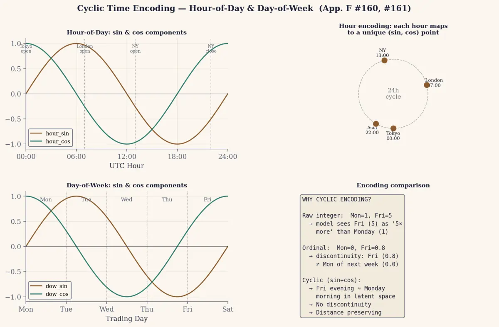
Sin/cos cyclic encoding of hour-of-day and day-of-week, so Friday evening sits next to Monday morning with no discontinuity. - Delta Price
- 1-bar momentum normalized by volatility
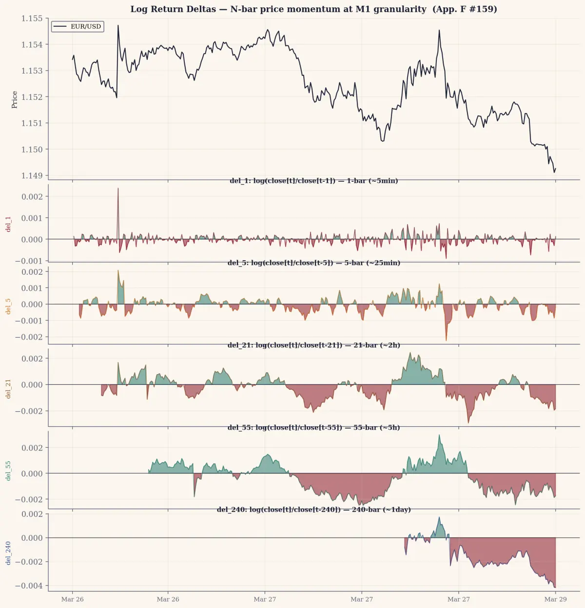
Multi-lag log-return deltas (1/5/21/55/240-bar) — price momentum across timescales. Shown with related delta/momentum features. - Direction Composite (ADX percentile)Direction Composite, ADX percentile
- Normalized directional strength: 0=no trend, 1=strong trend
Show the chart
ADX(14) trend strength with +DI / −DI directional lines; ADX above 25 marks a trending regime. Shown with related directional features. - DMI (Directional Movement Index)DMI, Directional Movement Index
- Wilder's +DI / −DI pair, grading up-pressure against down-pressure; ADX is derived from them. A signal weighted by ADX strength reads as direction with a conviction multiplier.
Show the chart
ADX(14) trend strength with +DI / −DI directional lines; ADX above 25 marks a trending regime. Shown with related directional features. - DMI Signal (weighted)DMI Signal, weighted
- Directional bias weighted by conviction. Strong ADX + clear direction = large signal. Weak ADX dampens signal.
Show the chart
ADX(14) trend strength with +DI / −DI directional lines; ADX above 25 marks a trending regime. Shown with related directional features. - Donchian channel
- A band at the highest high and lowest low of the past N bars; a breakout trade enters when price pushes outside it. The H4 version caught multi-day trends in backtest (84% WR) — but live it went 0-for-3 and was stopped; on H1 the breaks fire far more often and are mostly false, each capturing only a small hourly move, so the same fixed spread is a far larger fraction of what a trade wins — which is why H1 breakouts lose where H4 filters the noise, and why even H4's backtest promise did not survive contact with live execution.
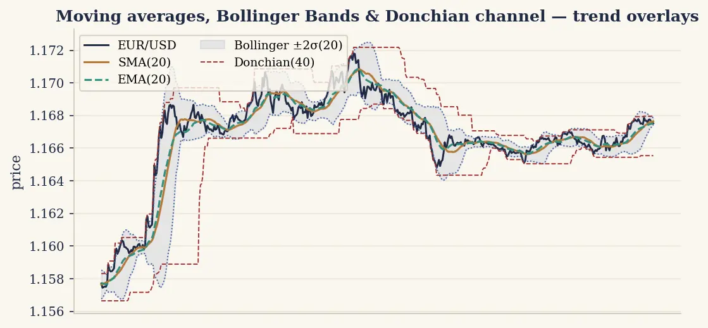
SMA(20), EMA(20), Bollinger ±2σ and the Donchian(40) channel over EUR/USD M5. Shown with related trend overlays. - Drawdown (DD)Drawdown
- The peak-to-trough loss of account equity, measured down from its high-water mark. A drawdown above 100% means the loss exceeded the starting capital itself.
Show the chart
How accumulated max-drawdown-pips (AMDDP) builds per bar while under water — the penalty behind the drawdown-aware fitness. Shown for a worked trade. - Dynamic program
- A method that finds the provably optimal sequence of decisions by building it up from the optimal solutions to smaller pieces; used here for the "best times to buy and sell with a transaction cost" oracle that drew the spread wall at its full height.
ELetters
- ECN
- Electronic Communication Network: a venue that matches orders directly at raw interbank spreads for an explicit commission, rather than embedding its fee inside the spread the way a retail dealer does. An ECN or futures spread is roughly half a US retail broker's (OANDA's included), which is why the project notes it would arithmetically resurrect about ten gross-positive edges that died only at the toll — a claim not tested through the apparatus, and one that ignores ECN commission and slippage.
- Edge
- A real, repeatable advantage: a way of trading that beats guessing, after every cost. The whole game is whether you have one — and far fewer have one than believe they do: the loss disclosures required on every retail broker's site say most accounts lose, and the eighty-one experiments in this book say how rarely the belief survives testing.
- eFF (Efficient Filter)eFF, Efficient Filter
- Noise reduction for noisy markets (not validated in this project's pipeline)
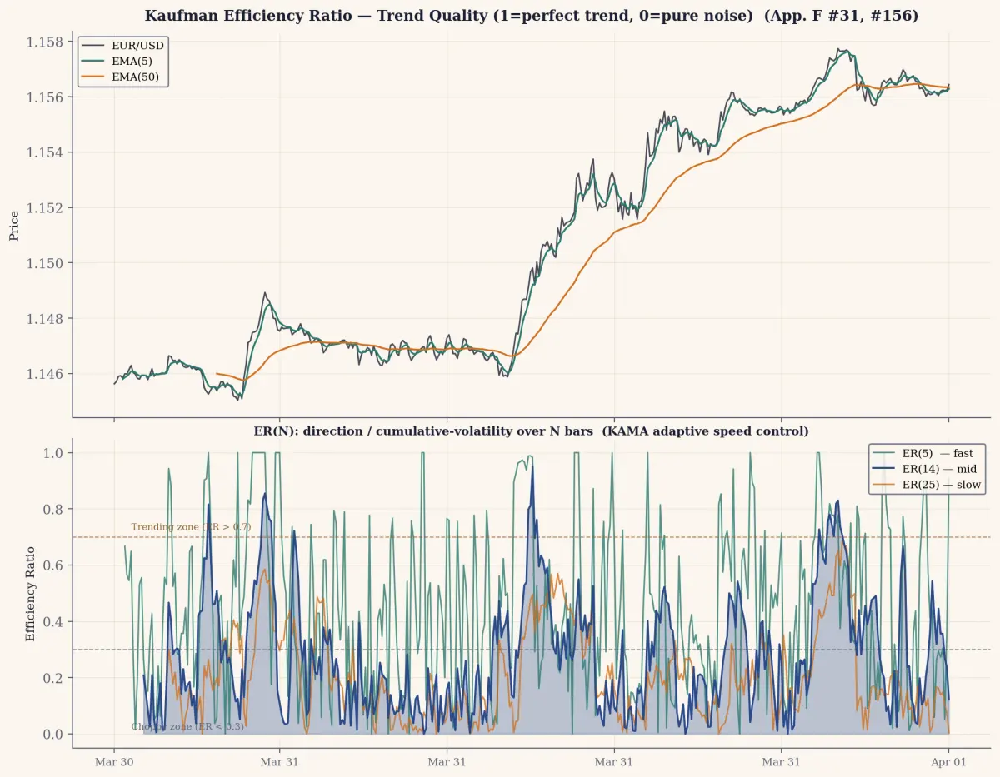
Kaufman Efficiency Ratio (net move ÷ path length) over several windows — near 1 = clean trend, near 0 = chop — the speed control behind KAMA. Shown with related trend-quality signals. - Efficiency (path)Efficiency, path
- For a single move, the straight-line distance from entry to exit divided by the total path the price travelled. 1.0 is a clean move; lower means the price doubled back. The oracle study found the median optimal trade ran at 0.57 — the reward lives in meandering moves big enough to clear the toll, not in clean little darts.
Show the chart
Kaufman Efficiency Ratio (net move ÷ path length) over several windows — near 1 = clean trend, near 0 = chop — the speed control behind KAMA. Shown with related trend-quality signals. - Efficiency Ratio (ER, Kaufman)Efficiency Ratio, ER, Kaufman, er_norm
- Net distance travelled over a window divided by the total path actually walked, bounded [0, 1]: 1 is a clean one-way move, 0 is pure back-and-forth. TEC is its signed twin (see TEC), dTEC its bar-to-bar change.
Show the chart
Kaufman Efficiency Ratio (net move ÷ path length) over several windows — near 1 = clean trend, near 0 = chop — the speed control behind KAMA. Shown with related trend-quality signals. - Efficiency Ratio (Kaufman)Kaufman
- Trending(≈1) vs choppy(≈0); measures directional efficiency
Show the chart
Kaufman Efficiency Ratio (net move ÷ path length) over several windows — near 1 = clean trend, near 0 = chop — the speed control behind KAMA. Shown with related trend-quality signals. - EMA (3, 5, 8, 13, 20, 21, 24, 50, 200)3, 5, 8, 13, 20, 21, 24, 50, 200
- Exponential moving averages at nine spans. Fast spans smooth already-smoothed inputs: EMA(3)/EMA(24) ride the Kalman currency strengths in FX-Strength; EMA(8)/EMA(21) form the Auto-Research momentum cross; EMA(13) is a MuZero mid-trend baseline; EMA(20) and EMA(200) are the fast/slow regime pair whose slope (not level) is the signal; EMA(50) is Zone Recovery's medium-term trend.
Show the chart
SMA(20), EMA(20), Bollinger ±2σ and the Donchian(40) channel over EUR/USD M5. Shown with related trend overlays. - EMA Diff Z-Score
- Unusual trend acceleration detection
Show the chart
Multi-lag log-return deltas (1/5/21/55/240-bar) — price momentum across timescales. Shown with related delta/momentum features. - EMA Slope
- Rate of trend change (acceleration/deceleration)
Show the chart
SMA(20), EMA(20), Bollinger ±2σ and the Donchian(40) channel over EUR/USD M5. Shown with related trend overlays. - Equity curve
- The running account balance plotted over time. A smooth, rising curve is the most seductive image in the discipline — and exactly what a lookahead bug produces.
- Exhaustion
- The bet that a move which has run too far is tired and will fade back; the mirror image of momentum.
- Expectancy
- A real, repeatable profit after costs. "Positive expectancy" means the strategy makes money on average once the spread and every other cost is paid.
- Expected value (EV)Expected value, EV
- The long-run average outcome of a trade, the probability-weighted mean of all possible P&Ls. Positive EV makes money on average; negative loses. The fill-corrected trailing-stop strategies came out at EV = minus-the-spread.
FLetters
- Fair Value (Multi-scale)Fair Value
- Fused price target from multiple timeframes
Show the chart
ASI → SMA(5) with the multi-timeframe momentum confluence MC(D) (agreement of ASI slope across scales) and its acceleration MC(dD). - FIFO
- First-In-First-Out. A position-management style in which the oldest open position is closed first. Not a stylistic choice for a US retail account: NFA Compliance Rule 2-43(b) has mandated FIFO close sequencing (and barred hedging) since 2009 — the regulatory-geography note in Appendix D carries the full history, through the 2010 leverage caps and the ~2012 broker consolidation.
- Fill / slippageFill, slippage
- The fill is the price at which the broker actually executes an order — almost never the price you wanted. Slippage is the gap between the two, and on a tight strategy it is often the entire edge.
- FIRMA (FIR Moving Average)FIRMA, FIR Moving Average
- Lower-lag trend filtering (performance not validated in this project's pipeline)
Show the chart
Bollinger Bands ±2σ and the adaptive KAMA trend line, plus BB position (0 = lower band, 1 = upper). Shown with related MA/band overlays. - Fisher transform
- An Ehlers reshaping of normalized price that sharpens turning-point timing by stretching extreme values; one of the classic chart-trader oscillators tested and found below the spread.
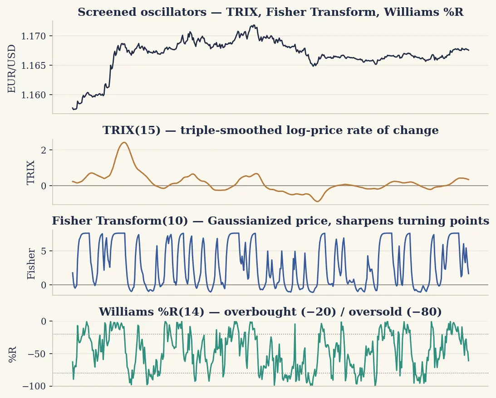
TRIX, Fisher Transform and Williams %R sub-panels — the screened-oscillator group. - Fixed-Std Arctan Z-Score
- Uses adaptive mean (rolling) but FIXED std from training data. Prevents false extremes during consolidation while detecting TRUE regime changes.
GLetters
- Genome
- A single evolved network: one candidate produced by the neuroevolution breeding process, scored against the market and kept or discarded on its result.
- Geometric Mean Combo
- Non-linear feature interaction
Show the chart
Swing-range position (0 = at low, 1 = at high), range ÷ ATR, and the combo-geometric = range × (pos − ½). Shown with related range features. - Grid trading
- Placing many small orders at regular price intervals above and below current price, harvesting the oscillations. High theoretical win rate per cycle; defeated in practice by adverse selection.
HLetters
- H1 Swing Range Position
- Position within last H1 swing range: 0=at swing low, 1=at swing high, <0 or >1 = breakout
Show the chart
Swing-range position (0 = at low, 1 = at high), range ÷ ATR, and the combo-geometric = range × (pos − ½). Shown with related range features. - H1 Trend Slope (structure-aware)H1 Trend Slope, structure-aware
- Market-structure-aware trend slope: uses the defining swing series for each regime. In uptrend, lows matter (support); in downtrend, highs matter (resistance).
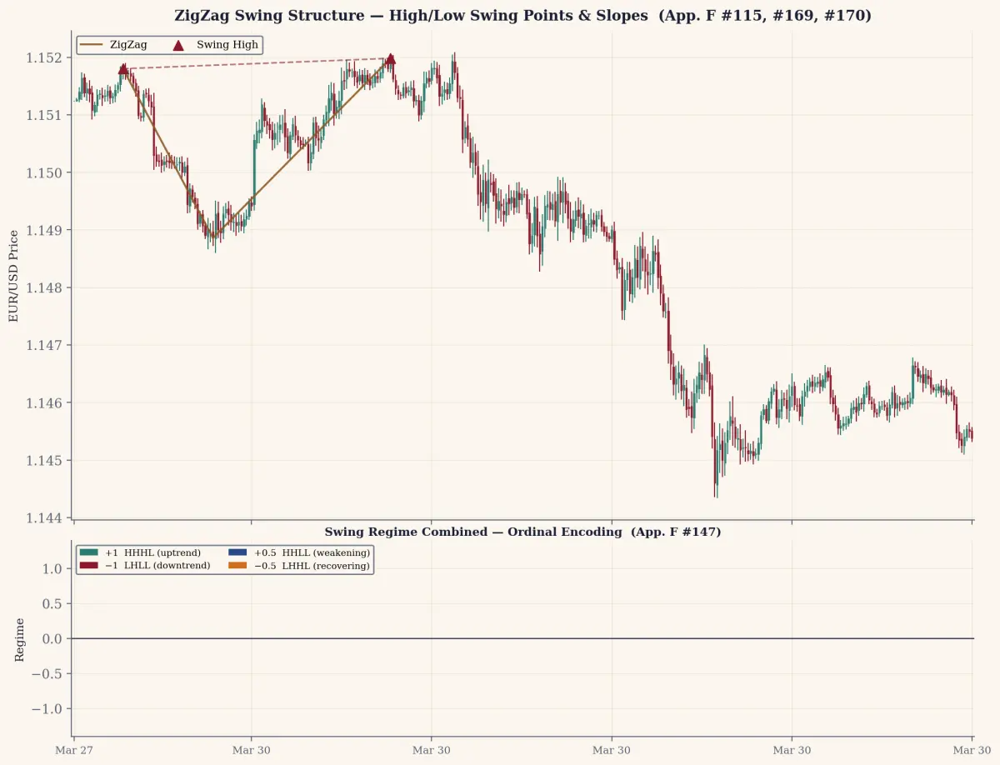
The ZigZag swing skeleton over candles with the ordinal swing-regime encoding (HHHL uptrend … LHLL downtrend). Shown with related swing-structure features. - HalfTrend
- An ATR-banded trend state machine that ratchets a trend line toward the latest extreme and flips state only when price closes far enough through the line. Smoother than a moving-average cross, but the ratchet makes it a trailing read, not a leading one.
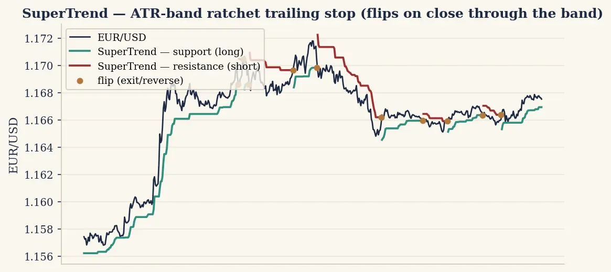
SuperTrend — the ATR-band ratchet that flips between support (long) and resistance (short) on a close through the band. Shown for trailing-stop exits. - HMM regime filter
- A Hidden Markov Model: it posits a few unobserved market states (e.g. trending vs mean-reverting), each emitting returns from its own distribution, with fixed switching probabilities, and trades only in the regime it was tuned for. A principled gate, but the states are statistical, not economic, and labelled only after the fact.
- Hour Encoding (sin/cos)Hour Encoding, sin, cos
- Time-of-day cycle; captures session effects
Show the chart
Sin/cos cyclic encoding of hour-of-day and day-of-week, so Friday evening sits next to Monday morning with no discontinuity. - Hour-of-Week Filter
- Exclude worst trading hours (statistically negative)
Show the chart
Sin/cos cyclic encoding of hour-of-day and day-of-week, so Friday evening sits next to Monday morning with no discontinuity. - HSP / LSPHSP, LSP
- High / low swing pivot: a confirmed local top or bottom in the swing structure, the reference levels the TopsBots detector tracks.
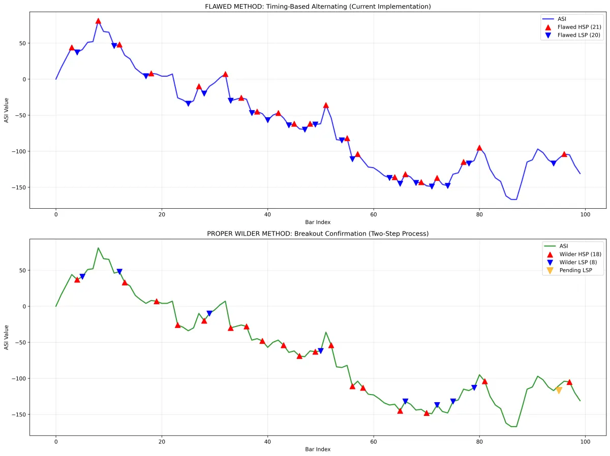
Swing-point detection: the flawed timing-based alternation vs. Wilder's proper breakout-confirmed HSP/LSP method. - HSP Slope (High Swing Point slope)HSP Slope, High Swing Point slope
- Rate of change between consecutive swing highs; rising HSP slope = strengthening uptrend, falling = weakening
Show the chart
ASI with detected swing points and the trendlines drawn through successive high/low swing points. - Hurst Exponent
- Mean-reverting(H<0.5) vs trending(H>0.5) vs random(H=0.5)
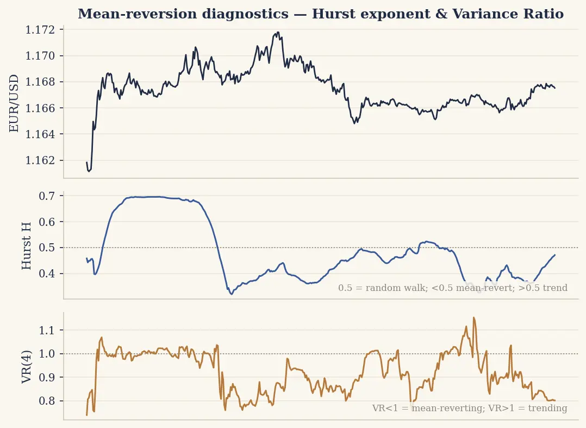
Rolling Hurst exponent (0.5 = random walk) and Variance Ratio (below 1 = mean-reverting) — the mean-reversion diagnostics. - Hurst exponent (H)Hurst exponent, H
- A regime label estimated by rescaled-range (R/S) analysis: H > 0.5 is a trending (persistent) series, H < 0.5 mean-reverting (anti-persistent), H ≈ 0.5 a random walk. Noisy on short windows — it classifies the recent past, not the next bar.
Show the chart
Rolling Hurst exponent (0.5 = random walk) and Variance Ratio (below 1 = mean-reverting) — the mean-reversion diagnostics.
ILetters
- In-sample (IS) / out-of-sample (OOS)In-sample, out-of-sample, IS, OOS
- IS is the history you may use while designing and tuning. OOS is the slice you may not touch until tuning is done — the test the strategy has never seen. Peek at OOS, tune, and re-run, and you have quietly turned it into IS.
- Indicator
- A mathematical transform of the price stream, computed from price and fed into the decision logic as a feature. Its job is to summarize the past, which is why leaking future data into one is catastrophic.
- Information Coefficient (IC)Information Coefficient, IC
- The (often rank) correlation between a signal's value and the next price move: 0 means no predictive power, ±1 would be perfect, and real signals on real markets live in the hundredths. IC decay / half-life is how fast that correlation falls off as the forward horizon lengthens — the signal's shelf life.
- Intraday
- Holding a trade for less than a day.
KLetters
- Kalman filter (currency-strength)Kalman filter, currency-strength, Kalman10
- A state-space estimator that decomposes the returns of many pairs into a smaller set of per-currency strength values, updating its estimate each bar from the latest observation. The FX-Strength strategy uses it on daily and hourly data to rank currencies strong-to-weak; it is one of the two things this project means by per-currency CSI.
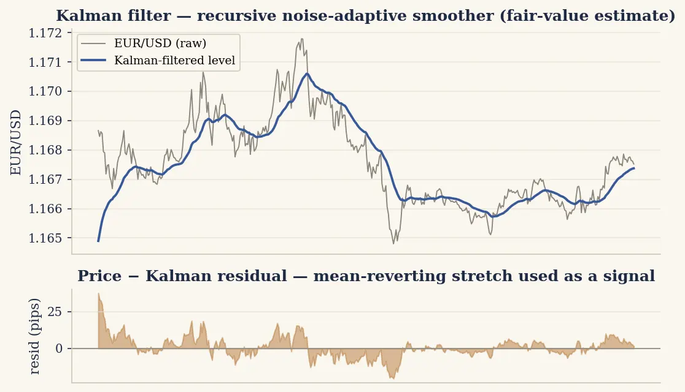
A Kalman filter recursively smoothing price into a noise-adaptive fair-value line, with the price-minus-filter residual as a stretch signal. - Kalman Filter (D1, H1)D1, H1
- Decomposes 10 pair returns into 6 currency strengths. The D1 filter is the primary daily-macro read (Q=1e-4, R=1e-2, warmup=100 D1 bars); the H1 filter is the tighter-noise intraday confirmation (Q=1e-5, R=1e-3, warmup=500 H1 bars).
Show the chart
A Kalman filter recursively smoothing price into a noise-adaptive fair-value line, with the price-minus-filter residual as a stretch signal. - KAMA
- Kaufman Adaptive Moving Average: a moving average whose smoothing speed is driven by the Efficiency Ratio — fast in clean trends, slow in chop — to cut the whipsaw a fixed-speed average suffers.
Show the chart
Bollinger Bands ±2σ and the adaptive KAMA trend line, plus BB position (0 = lower band, 1 = upper). Shown with related MA/band overlays. - KAMA (Kaufman Adaptive MA)Kaufman Adaptive MA
- Adaptive-speed moving average (fast in trends, slow in chop)
Show the chart
Bollinger Bands ±2σ and the adaptive KAMA trend line, plus BB position (0 = lower band, 1 = upper). Shown with related MA/band overlays. - Karpathy LLM-discovery loop
- An automated strategy-discovery loop in which a large-language-model agent repeatedly rewrites a generate_signals() function and a fixed harness scores each rewrite by one composite SCORE (pips-per-day over drawdown-risk). A different search operator — code-space edits — but only as trustworthy as its harness; a harness with a lookahead hole would reward lookahead.
- Keltner Channel / squeezeKeltner Channel, squeeze
- An envelope of EMA ± m · ATR. The squeeze fires when the Bollinger Bands pull inside the Keltner Channel, meaning realized volatility has collapsed below its average range — a coiled-spring timing flag that is silent on which way the spring will release.
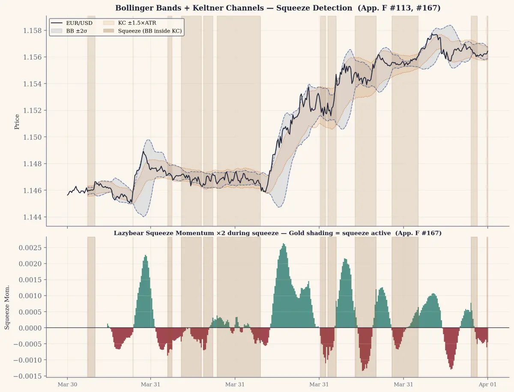
Bollinger Bands inside Keltner channels — the squeeze (gold shading) — with the release-momentum histogram. Shown with the Keltner overlay.
LLetters
- LightGBM
- A fast gradient-boosting library that builds an ensemble of decision trees. Used here both for feature-importance screening and as a go/no-go entry filter that vetoes a heuristic's trades in conditions where they historically failed. It can only filter the signal it is given, never improve it, and overfits readily.
- London Session Range
- London session boundaries for NY fade
Show the chart
Intraday price with the Asian-session range, prior-day high/low and session pivots drawn forward. Shown with related session levels. - Lookahead biascompute_mc_on_series
- Using information that did not exist at the moment the signal fired — tomorrow's price leaking into today's decision. It produces a clean, smooth, entirely fictional result, indistinguishable from a real edge until the money is down. The project's central failure mode, across three separate incidents: two reached live money (the ~55,000-pip loss in Part III, itself a paired compute-and-curator bug, and a separate TR-Momentum fill artifact), and one — StrengthSpread — was caught by the statistical gates before it ever reached a live account.
- LSP Slope (Low Swing Point slope)LSP Slope, Low Swing Point slope
- Rate of change between consecutive swing lows; rising LSP slope = higher lows (uptrend support), falling = lower lows
Show the chart
ASI with detected swing points and the trendlines drawn through successive high/low swing points.
MLetters
- M1 Trend Slope (structure-aware)M1 Trend Slope
- Fast-timeframe market-structure-aware trend slope
Show the chart
The ZigZag swing skeleton over candles with the ordinal swing-regime encoding (HHHL uptrend … LHLL downtrend). Shown with related swing-structure features. - MACDmacd_hist
- Moving Average Convergence Divergence. The MACD line is EMA(12) minus EMA(26); the signal line is a 9-period EMA of that difference; the histogram is the gap between the two (line minus signal). All three use true exponential moving averages. The Part III curator bug substituted a plain SMA for the EMA and computed the wrong quantity entirely, so the live strategy received a different indicator than the one it was trained on — a concrete reminder that label-matching is not formula-matching.
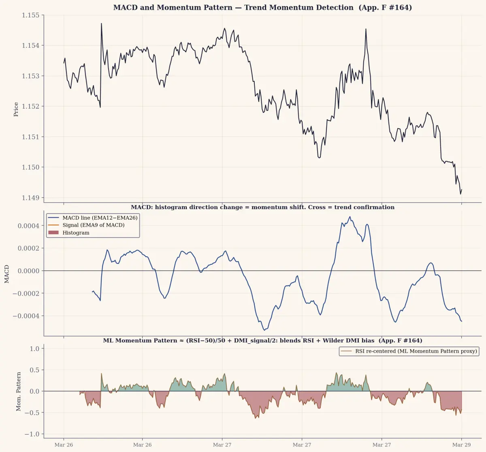
MACD line (EMA12−EMA26), its EMA9 signal, and the histogram whose sign change flags a momentum shift. Shown with a momentum-pattern panel. - MAE (Max Adverse Excursion)Max Adverse Excursion
- Worst unrealized P/L; risk measurement
Show the chart
How accumulated max-drawdown-pips (AMDDP) builds per bar while under water — the penalty behind the drawdown-aware fitness. Shown for a worked trade. - Margin / margin call / marked to marketMargin, margin call, marked to market
- Margin is the collateral the broker reserves for each open position. Marked to market re-values every open position at the current price on every bar. A margin call (closeout) fires when account equity falls below required margin and the broker force-closes positions automatically. OANDA liquidates at 50% margin.
- Martingale
- A strategy that doubles down after a loss, hoping a winning streak recovers everything. It wins reliably until the streak it cannot afford arrives. Whether any single terminal loss exceeds every prior win combined is a matter of luck; the point is that the expectation is negative and the size of the tail loss grows without bound.
- Max Drawdown (intra-trade)Max Drawdown, intra-trade
- Worst point during current trade
Show the chart
How accumulated max-drawdown-pips (AMDDP) builds per bar while under water — the penalty behind the drawdown-aware fitness. Shown for a worked trade. - Mean reversion / momentumMean reversion, momentum
- Mean reversion bets price snaps back toward its average; momentum bets it keeps going.
- MFE (Max Favorable Excursion)Max Favorable Excursion
- Best unrealized P/L during trade; opportunity measurement
- MFE / MAEMFE, MAE
- Maximum favorable / adverse excursion: the best and worst unrealized point a trade reaches before it closes. The raw material of the path-shape reward functions (capture ratio, path quality, AMDDP).
Show the chart
How accumulated max-drawdown-pips (AMDDP) builds per bar while under water — the penalty behind the drawdown-aware fitness. Shown for a worked trade. - Momentum Strength
- Direction consistency (what fraction of last 10 bars had same-sign momentum) × magnitude. High = persistent strong momentum.
Show the chart
MACD line (EMA12−EMA26), its EMA9 signal, and the histogram whose sign change flags a momentum shift. Shown with a momentum-pattern panel. - Momentum Z-Score
- Unusual price acceleration
Show the chart
Multi-lag log-return deltas (1/5/21/55/240-bar) — price momentum across timescales. Shown with related delta/momentum features. - Monte-Carlo
- a resolved same-letters clash. Earlier printings abbreviated two unrelated things as bare MC; this edition eliminates the clash so a bare MC never appears in the text. (1) Market Condition — the smoothed, ASI-derived momentum reading at the end of the ASIMC pipeline — now always travels qualified: MC(D) is the level (which way the smoothed series leans), MC(dD) whether that lean is strengthening or fading, both bounded to roughly [−1, +1]. (2) Monte-Carlo — the trade-shuffle validation gate — is now written out in full wherever it occurs.
- Monte-Carlo (MC) gateMonte-Carlo gate, MC, mc_p, MC p-value, MC p, MC gate
- Reshuffle your trade results thousands of times and ask how often random does as well or better. If random wins most of the time, the "edge" is almost certainly noise. The gate can itself be passed by a loss-deferral structure (Chapter V), which is why a 100% pass rate is a warning, not a reassurance.
- Moving average (SMA / EMA)Moving average, SMA, EMA
- The average of the last N prices, recomputed each bar. SMA weights them equally; EMA weights recent bars more. A strategy trained on one recipe behaves differently if fed another — the second Part III bug was exactly this substitution.
Show the chart
SMA(20), EMA(20), Bollinger ±2σ and the Donchian(40) channel over EUR/USD M5. Shown with related trend overlays. - MTF Swing Alignment
- STRONG_BULLISH: H1=HHHL & M1=HHHL. STRONG_BEARISH: H1=LHLL & M1=LHLL. BULL_PULLBACK: H1=HHHL but M1=LHLL/LHHL (buy opportunity). BEAR_RALLY: H1=LHLL but M1=HHHL/LHHL (sell opportunity).
Show the chart
The ZigZag swing skeleton over candles with the ordinal swing-regime encoding (HHHL uptrend … LHLL downtrend). Shown with related swing-structure features. - Multi-TF ZigZag S/RMulti-TF ZigZag S
- Multi-timeframe support/resistance from ZigZag swing points drawn as horizontal lines
Show the chart
The ZigZag swing skeleton over candles with the ordinal swing-regime encoding (HHHL uptrend … LHLL downtrend). Shown with related swing-structure features. - MuZero
- DeepMind's model-based reinforcement-learning algorithm. It is not handed the rules of its environment; it learns its own world-model (three coupled networks — representation, dynamics, prediction) and then plans by running Monte-Carlo Tree Search through that learned model in latent space. The project's clearest case of capacity overwhelming signal: ~2.5 million parameters, and it never reached positive expectancy on real prices.
NLetters
- NEAT
- NeuroEvolution of Augmenting Topologies. Small neural networks compete, the best reproduce, and over generations both the weights and the structure of the network evolve, starting minimal and adding nodes and connections. The contrast with CMA-ES is that NEAT searches over architectures; CMA-ES searches over weights of a fixed architecture.
- Newey-West / HACNewey-West, HAC
- A heteroskedasticity-and-autocorrelation-consistent correction to a t-statistic. FX trades fired on the same day are not independent observations; Newey-West (and the related daily-clustering) widens the error bars so the t-stat is not flattered by serial correlation. It is what dropped the best surviving edge from t ≈ 3.4 to t ≈ 2.25.
- Noise ratio
- The maximum price excursion over a window divided by the median spread over that window — a blunt tradeability gate. A low ratio means the path is mostly spread-sized chop not worth touching; it says nothing about direction.
- Normalization
- Rescaling a raw number into a comparable range (e.g. dividing a move by recent volatility, or squashing through arctan), so "big" and "small" mean the same across pairs and regimes. Get it wrong and a familiar-looking number means something different. The lookahead-safe versions in this project freeze the scaling statistics from the training window rather than recomputing them forward.
OLetters
- OANDA
- The retail FX broker the project uses: no minimum balance, no minimum trade size, a programmatic v20 API, US-based and US-regulated. The operational reason the whole methodology could run on minimal capital.
- OANDA NEAT Trendline Slope
- Simple 12-bar price slope as trend proxy. Very basic compared to regression slope.
Show the chart
ASI with detected swing points and the trendlines drawn through successive high/low swing points. - Oracle ceiling
- The most a perfect, all-seeing trader could extract from a pair, computed by a dynamic program with full hindsight and one spread charged per trade. On GBP_JPY it came to 2,426 pips/day — but 49% of even the optimal trades net less than a single spread, so the slice a real trader could reach is about a tenth of that. The fullest statement of the spread wall.
PLetters
- P&F (Point-&-Figure)P&F, Point-&-Figure
- A charting method that discards the time axis: a new "box" is marked only when price moves a fixed amount (say 10 pips), so small wiggles are ignored. The reversal is how many boxes the other way start a new column. Its trap is that the box level a strategy claims to decide against is only fixed once future price confirms it — an easy way to leak lookahead.
Show the chart
A Point & Figure chart: X = up-columns, O = down-columns, a new column only on a ≥3-box reversal — time is collapsed out. - p-value
- The probability of a result at least this good by pure chance. Conventionally you want p < 0.05 (random would beat you less than 5% of the time). The first neuroevolution result's p of 0.884 — random beating it 88% of the time — is the cautionary case the whole Monte-Carlo discipline grew from.
- Paper test
- Running a strategy on live prices but with simulated rather than real orders.
- Parabolic SAR (PSAR)Parabolic SAR, PSAR
- Wilder's stop-and-reverse trailing indicator: a level that accelerates toward price as a trend extends, used as a trailing stop. In this project's bake-off the standard fast acceleration choked winners on FX; a wide, slow variant trailed better, and PSAR overall fared poorly against alternatives like SuperTrend.
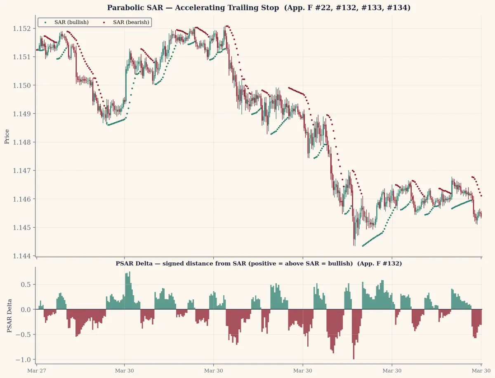
Parabolic SAR dots flipping from below (bullish) to above (bearish) price as an accelerating trailing stop, with the signed PSAR delta. - Parabolic SAR (standard + wide/slow)standard + wide, slow
- Trend-reversal detector and trailing stop. The standard fast-tightening AF (MuZero Tier 3) chokes winners on FX; the wide/slow variant starts wide and activates only past a profit threshold, and is the live FX-Strength trailing stop.
Show the chart
Parabolic SAR dots flipping from below (bullish) to above (bearish) price as an accelerating trailing stop, with the signed PSAR delta. - Path quality
- A reward measure: MFE / (MFE + MAE + ε). 1.0 means the trade never went underwater; 0.5 means it ran as far against the position as it ran for it. Rewards trades that go right without first going wrong.
- PhaseState (KAMA/SMA binary)PhaseState, SMA binary
- Binary trend phase: above or below time-shifted moving average. Configurable shift.
Show the chart
Bollinger Bands ±2σ and the adaptive KAMA trend line, plus BB position (0 = lower band, 1 = upper). Shown with related MA/band overlays. - Pip
- The smallest standard price increment in FX: 0.0001 of price for most pairs, 0.01 for yen pairs. The universal unit; every result here is sized in pips.
- Pips from Peak
- How far from best unrealized P/L
Show the chart
How accumulated max-drawdown-pips (AMDDP) builds per bar while under water — the penalty behind the drawdown-aware fitness. Shown for a worked trade. - Pivot High/Low (Daily)Daily
- Daily support/resistance levels
Show the chart
Intraday price with the Asian-session range, prior-day high/low and session pivots drawn forward. Shown with related session levels. - Pivot High/Low (Hourly)Pivot High, Low, Hourly
- Hourly support/resistance levels
Show the chart
Intraday price with the Asian-session range, prior-day high/low and session pivots drawn forward. Shown with related session levels. - Position Efficiency
- How well agent is capturing the move
- Position Side
- Agent's current exposure direction
- Positive control
- A test on a case where the answer is already known to be yes. If the instrument finds the planted answer, its "no" on real samples can be trusted; if it cannot, every reading is suspect. The sine-wave run was this project's.
- PPO
- Proximal Policy Optimization, a standard policy-gradient reinforcement-learning algorithm used in the earlier new_swt micro effort to train a trading policy directly. Like the MuZero work it consumed, it never reached positive expectancy on real prices — a method in the inventory, not an edge.
- Pre-NY Session Range
- Pre-NY range for breakout detection
Show the chart
Intraday price with the Asian-session range, prior-day high/low and session pivots drawn forward. Shown with related session levels. - Price Deltas (arctan)Price Deltas, arctan
- Multi-horizon momentum (5-bar, 21-bar, 55-bar)
Show the chart
Multi-lag log-return deltas (1/5/21/55/240-bar) — price momentum across timescales. Shown with related delta/momentum features. - Prior Day High/LowPrior Day High
- Psychological barrier levels
Show the chart
Intraday price with the Asian-session range, prior-day high/low and session pivots drawn forward. Shown with related session levels. - Profit factor (PF)Profit factor, PF
- Dollars won on winners divided by dollars lost on losers. Above 1.0 is net-positive; Zone Recovery's 1.10 means \$1.10 back for every \$1.00 lost — positive in expectation, and still a structurally losing strategy once the tail is priced in.
- PSAR Acceleration
- How fast the SAR is converging on price. High acceleration = reversal imminent.
Show the chart
Parabolic SAR dots flipping from below (bullish) to above (bearish) price as an accelerating trailing stop, with the signed PSAR delta. - PSAR Delta
- Signed distance from Parabolic SAR. Positive = above SAR (bullish), negative = below (bearish).
Show the chart
Parabolic SAR dots flipping from below (bullish) to above (bearish) price as an accelerating trailing stop, with the signed PSAR delta. - PSAR Strength
- Normalized distance from SAR. Large = strong trend, small = SAR catching up (reversal risk).
Show the chart
Parabolic SAR dots flipping from below (bullish) to above (bearish) price as an accelerating trailing stop, with the signed PSAR delta.
QLetters
- Quintile long/short factor portfolioQuintile long, short factor portfolio
- The standard cross-sectional factor construction: each period rank the universe by a factor, go long the top fifth and short the bottom fifth, hold for a fixed horizon. It isolates the factor's cross-sectional return but presumes a universe wide enough for quintiles, which is thin in major FX.
RLetters
- R (risk unit)R, risk unit
- The amount you were willing to lose on a trade before placing it. A "2R win" made twice what you risked; counting in R compares trades of different sizes on one scale.
- Random walk
- A price path with no memory, each step independent of the last. The variance ratio formally tests for departures from it.
- Range bars
- A non-time bar that closes when price has moved a fixed distance, so each bar holds equal movement rather than equal time. It filters quiet periods but makes timestamps irregular, breaking any tool that assumes a fixed clock.
- Range Position (P&F)
- Position in last 20-column price range
Show the chart
A Point & Figure chart: X = up-columns, O = down-columns, a new column only on a ≥3-box reversal — time is collapsed out. - Range Position (Time)Range Position, range_pos_30
- Position in 240-bar HH/LL channel; overbought/oversold
Show the chart
Swing-range position (0 = at low, 1 = at high), range ÷ ATR, and the combo-geometric = range × (pos − ½). Shown with related range features. - Range Size Z-Score
- Unusual bar range detection
Show the chart
ATR(7/14/28) as the Wilder-smoothed mean of True Range, with the price envelope and the historical quiet/loud regime percentile. - Realized Volatility
- Actual return dispersion (vs ATR which uses range)
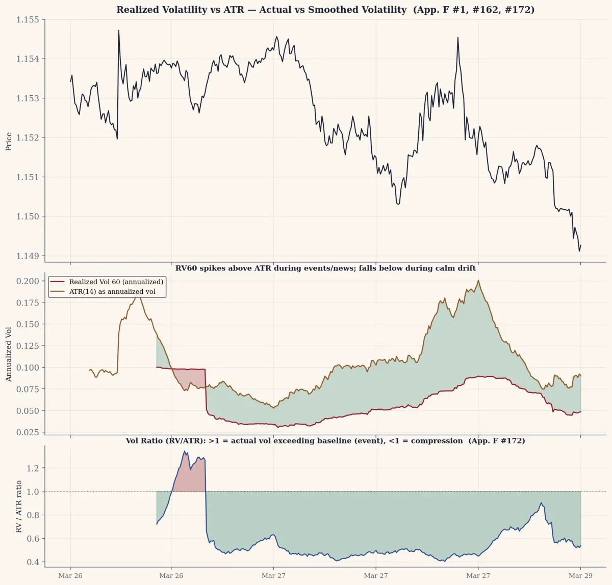
Realized volatility (rolling annualized return σ) against ATR, and their ratio — above 1 marks an event, below 1 marks compression. - Regime (4-class)Regime, 4-class
- Market microstructure classification
- Regime-dependent
- Working only under specific market conditions (a trend, a volatility level) and failing when they change.
- Regression Slope
- Short-term trend direction and strength
Show the chart
SMA(20), EMA(20), Bollinger ±2σ and the Donchian(40) channel over EUR/USD M5. Shown with related trend overlays. - Retail FX
- The foreign-exchange market as accessed by an individual through an online broker, rather than by the institutional banks and funds that dominate it.
- Reversal Signal
- Time since last P&F reversal; momentum exhaustion proxy
Show the chart
A Point & Figure chart: X = up-columns, O = down-columns, a new column only on a ≥3-box reversal — time is collapsed out. - RSI (Relative Strength Index)RSI, Relative Strength Index
- Wilder's 0–100 overbought/oversold oscillator, comparing average gains to average losses. Tested across timeframes and framings and found below the spread on its own.
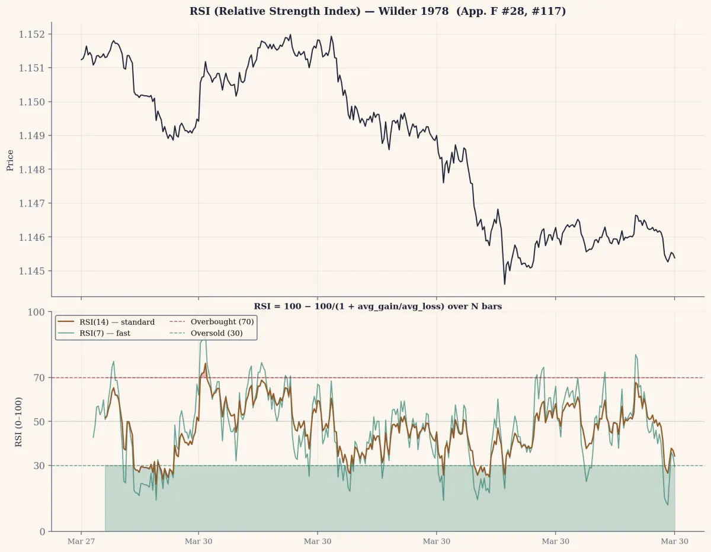
RSI(7/14) oscillating 0–100 with the 70/30 overbought–oversold bands. - RSI Extreme
- RSI re-centered around zero: -1=oversold extreme, +1=overbought extreme, 0=neutral
Show the chart
RSI(7/14) oscillating 0–100 with the 70/30 overbought–oversold bands. - RSI(14)
- Overbought(>70)/oversold(<30) momentum
Show the chart
RSI(7/14) oscillating 0–100 with the 70/30 overbought–oversold bands. - RT Breakout Proximity
- Breakout imminence signal. Near 1 = price at edge of range, breakout likely.
- RT Buy Distance (rt_b1_distance)RT Buy Distance, rt_b1_distance
- Distance to Wilder's RT buy signal level (support). Small value = near support = potential long.
- RT Mode
- Wilder's core regime classification: is the market reacting (oscillating between S/R) or trending (breaking through)?
- RT Position Signal
- Wilder's RT directional signal combining mode, range position, and momentum
- RT Sell Distance (rt_s1_distance)RT Sell Distance, rt_s1_distance
- Distance to RT sell signal level (resistance). Small value = near resistance = potential short.
- RT System (Reaction/Trend)RT System, Reaction, Trend
- Wilder's Reaction/Trend system: detects whether market is in reaction (oscillating between S/R) or trend (breaking through).
- RT Trailing Distance
- Distance from Wilder's trailing stop within the RT system
SLetters
- S5
- The five-second timeframe — the finest-grained price record the project keeps.
- SB-A (Structural Breakout — ASI)Structural Breakout — ASI
- ASI-based structural breakout state machine. Leads M1 (price) in 104/145 matched signal pairs — ASI breaks its structural level before price does. Median lead time: M2 fires ~30 min before M1 confirms. Standalone P&L: +1039p/247T/75%WR (EUR/JPY M5, 2016 bars, 0.5p spread).
Show the chart
ASI with detected swing points and the trendlines drawn through successive high/low swing points. - SB-A / SB-P / SB-JointSB-A, SB-P, SB-Joint, sb_a, sb_p
- Structural-breakout state features built on the TopsBots swing detector. SB-P runs the detector on raw price; SB-A runs it on the ASI curve (cleaner swings, and it leads price); each encodes position relative to the active swing levels as a five-state machine (+2 broke the swing high … −2 broke the swing low). SB-Joint is their 5×5 product; its value is in disagreement — when price breaks one way while ASI points the other, the "toxic" states flag false breakouts to block.
Show the chart
ASI with detected swing points and the trendlines drawn through successive high/low swing points. - SB-Joint (M1×M2 Joint State)M1×M2 Joint State
- 25-state joint breakout context map. Toxic states MUST be hard-coded as entry blocks — not learned by NN (saves NN capacity). HHHL/LHLL/LHHL/HHLL (4-state swing regime from new_swt) describes PATTERN of swing sequence; SB-Joint describes POSITION relative to active swing levels. They are complementary: HHHL/LHLL = trend structure over multiple swings; SB-Joint = real-time position vs nearest swing boundary.
Show the chart
ASI with detected swing points and the trendlines drawn through successive high/low swing points. - SB-P (Structural Breakout — Price)Structural Breakout — Price
- Price-based structural breakout state machine. Candle-level responsive — fires before ASI-based version in only 17/145 matched pairs (M2 usually leads). Standalone P&L on EUR/JPY M5 (2016 bars, 0.5p spread): +260p/144T/56%WR.
Show the chart
The ZigZag swing skeleton over candles with the ordinal swing-regime encoding (HHHL uptrend … LHLL downtrend). Shown with related swing-structure features. - Session VWAP
- Daily fair value estimate (no volume, uses tick count proxy)
Show the chart
Intraday price with the Asian-session range, prior-day high/low and session pivots drawn forward. Shown with related session levels. - SHAP
- SHapley Additive exPlanations — a game-theoretic feature-importance score for a fitted model. In this project SHAP importance on zigzag direction-classification proved orthogonal-to-negatively-correlated with real trading edge: features ranked #1 by SHAP were dead-last by out-of-sample P&L, because classifying direction is a different quantity from knowing when to enter net of spread.
- Sharpe ratio
- Profit divided by the volatility of profit. Above 1.0 is good, above 2.0 excellent. The +0.53 on the first neuroevolution result should have been the first hint it was not as exciting as it felt.
- SIC/SAR RangeSIC, SAR Range
- Per-bar range used in Swing Index Calculation context. Captures intra-bar volatility.
Show the chart
Parabolic SAR dots flipping from below (bullish) to above (bearish) price as an accelerating trailing stop, with the signed PSAR delta. - Signed CSI
- Directional CSI for long/short signals
Show the chart
Per-currency strength z-scores (USD/EUR/GBP/JPY) from rolling returns and the EUR−USD StrengthSpread. Shown with related currency-strength features. - Signed Efficiency (TEC)Signed Efficiency
- Kaufman ER but SIGNED. +1=perfect uptrend, -1=perfect downtrend, ~0=chop. N=5 best for M5 micro-swings.
Show the chart
Kaufman Efficiency Ratio (net move ÷ path length) over several windows — near 1 = clean trend, near 0 = chop — the speed control behind KAMA. Shown with related trend-quality signals. - SMA (5, 20, 200)5, 20, 200
- Simple moving averages. SMA(20) is the mid-trend line and the Bollinger-band centre; SMA(200) is a long-term trend filter; SMA(5) is a short-term average computed but not used live.
Show the chart
SMA(20), EMA(20), Bollinger ±2σ and the Donchian(40) channel over EUR/USD M5. Shown with related trend overlays. - Speed (PnL/bars)Speed, PnL, bars
- Pips earned per bar held. Directly punishes slow trades. +10p in 5 bars = +2.0, +10p in 40 bars = +0.25.
- Spot FX
- Plain currency trading: buy one currency, sell another, no expiration — as opposed to futures or options.
- Spread
- The gap between the price you can buy at and sell at — the unavoidable toll on every round-trip trade; some brokers add a commission on top. The third wall: every intraday directional bet dies once you pay the realistic cost of getting in and out.
- SQN (System Quality Number)SQN, System Quality Number
- Van Tharp's standard score combining edge size, consistency, and trade count into one figure. Above 1.0 is the threshold for a system worth trading; it is one of the four statistical gates in the validation pipeline.
- SqueezeState (BB inside KC)SqueezeState, BB inside KC
- Bollinger Band squeeze inside Keltner Channels. Momentum amplified 2× during squeeze (breakout imminent).
Show the chart
Bollinger Bands inside Keltner channels — the squeeze (gold shading) — with the release-momentum histogram. Shown with the Keltner overlay. - Stochastic MCTS (chance nodes)Stochastic MCTS, chance nodes
- The planner inside the MuZero work, adapted for a market the agent does not control. The search tree alternates decision nodes (the agent chooses) with chance nodes (the market moves — modelled as discrete UP / NEUTRAL / DOWN outcomes with probabilities), so the agent cannot assume its preferred outcome. A faithful model of an adversarial environment, at the cost of a wider tree.
- Stop-loss (SL) / take-profit (TP) / trailing stopStop-loss, take-profit, trailing stop, SL, TP
- SL closes a losing trade at a fixed loss; TP closes a winner at a fixed gain; a trailing stop follows price as a trade moves in your favor and exits if it retraces by a fixed amount. A strategy with no SL can post a 99% win rate by deferring its losses into open positions.
Show the chart
SuperTrend — the ATR-band ratchet that flips between support (long) and resistance (short) on a close through the band. Shown for trailing-stop exits. - StrengthSpread
- The csi_factor_study signal z(Strength_A) − z(Strength_B): the difference between two currencies' standardized strength scores. Its H4 64-bar-hold version was the study's most durable signal (a real contrarian out-of-sample Sharpe), but its first build carried a 55-minute lookahead leak from cross-timeframe merging and had to be rebuilt causally.
Show the chart
Per-currency strength z-scores (USD/EUR/GBP/JPY) from rolling returns and the EUR−USD StrengthSpread. Shown with related currency-strength features. - Super Smoother (Ehlers)Super Smoother, Ehlers
- Two-pole Butterworth filter; minimal lag vs MA
Show the chart
Bollinger Bands ±2σ and the adaptive KAMA trend line, plus BB position (0 = lower band, 1 = upper). Shown with related MA/band overlays. - SuperTrend
- An ATR-banded trailing-stop indicator (a per-trade ratchet of hl2 ± m · ATR, exiting on a close through the band). In this project's trailing-stop bake-off it was the standout, positive in- and out-of-sample at H4 and H1 and beating PSAR by a wide margin per trade.
Show the chart
SuperTrend — the ATR-band ratchet that flips between support (long) and resistance (short) on a close through the band. Shown for trailing-stop exits. - Survival-Score exit
- A heuristic exit that sums several pressures into one scalar (momentum + atr_expansion − age − giveback) and closes the position when the score drops below a threshold. Interpretable and tunable, but its weights and threshold are free parameters that overfit readily.
- Swing Point Range
- Width of current swing range (H1 high swing - H1 low swing); measures structural volatility
Show the chart
Swing-range position (0 = at low, 1 = at high), range ÷ ATR, and the combo-geometric = range × (pos − ½). Shown with related range features. - Swing Range Position
- Structure-aware position between confirmed swing H/L (not arbitrary window).
Show the chart
Swing-range position (0 = at low, 1 = at high), range ÷ ATR, and the combo-geometric = range × (pos − ½). Shown with related range features. - Swing Regime (multi-scale)Swing Regime, multi-scale
- Multi-scale trend regime classification
Show the chart
The ZigZag swing skeleton over candles with the ordinal swing-regime encoding (HHHL uptrend … LHLL downtrend). Shown with related swing-structure features. - Swing Regime Combined (ordinal)Swing Regime Combined, ordinal
- Final production encoding of swing state regime. Single feature replacing 4 one-hot channels.
Show the chart
The ZigZag swing skeleton over candles with the ordinal swing-regime encoding (HHHL uptrend … LHLL downtrend). Shown with related swing-structure features. - Swing Regime Fibonacci (multi-scale)Swing Regime Fibonacci
- Multi-scale regime: captures swing states at different granularities simultaneously. Fibonacci lookback periods (3,5,8,13).
Show the chart
The ZigZag swing skeleton over candles with the ordinal swing-regime encoding (HHHL uptrend … LHLL downtrend). Shown with related swing-structure features. - Swing Slope (linreg through HSPs/LSPs)Swing Slope, linreg through HSPs, LSPs
- Rate of change of swing highs (or lows) via linear regression. More robust than 2-point slope — uses 2-3 points.
Show the chart
ASI with detected swing points and the trendlines drawn through successive high/low swing points. - Swing State (HHHL/LHLL/HHLL/LHHL)Swing State, HHHL, LHLL, HHLL, LHHL
- Market structure regime from price swing points. HHHL=strong trend up, LHLL=strong trend down, HHLL=expanding range (breakout), LHHL=contracting range (squeeze).
Show the chart
The ZigZag swing skeleton over candles with the ordinal swing-regime encoding (HHHL uptrend … LHLL downtrend). Shown with related swing-structure features.
TLetters
- t-statistic
- How many standard errors an observed effect sits from zero. Above 2 is "probably real," above 3 strong. Always quote it after the appropriate clustering/HAC correction (see Newey-West).
- Tail risk
- The rare, large losses that show up only occasionally but can wipe out months or years of small wins. The Swiss-franc un-peg and the Brexit flash crash are the canonical examples; none appears in the 5.5-year backtest window.
- TBP Relative (H1)
- Where price sits between RT system's support and resistance. 0=at support, 1=at resistance.
Show the chart
The ZigZag swing skeleton over candles with the ordinal swing-regime encoding (HHHL uptrend … LHLL downtrend). Shown with related swing-structure features. - TBP Relative (M5)TBP Relative
- Position within bar range adjusted by trend slope. Rising trend amplifies range position.
Show the chart
The ZigZag swing skeleton over candles with the ordinal swing-regime encoding (HHHL uptrend … LHLL downtrend). Shown with related swing-structure features. - TCN (Temporal Convolutional Network)TCN, Temporal Convolutional Network
- A sequence encoder built from dilated causal convolutions — convolutions that only look backward in time (no future leak) and skip an exponentially growing number of steps between taps, giving a wide receptive field with few layers. A lookahead-safe alternative to a recurrent network; its value depends entirely on whether the signal it is asked to encode exists.
- TCN-AE Latent (18D)TCN-AE Latent, 18D
- Compressed market state; 99.7% reconstruction accuracy
- TEC (Trend-Efficiency Coefficient)TEC, Trend-Efficiency Coefficient, TEC_5, dTEC
- A signed efficiency ratio from the scalper repo: net displacement over the last n bars divided by total distance travelled, bounded [−1, +1]. Near +1 price marched straight up, near −1 straight down, near 0 it wandered. dTEC is its bar-to-bar change — whether the path is becoming more or less efficient.
Show the chart
Kaufman Efficiency Ratio (net move ÷ path length) over several windows — near 1 = clean trend, near 0 = chop — the speed control behind KAMA. Shown with related trend-quality signals. - Timeframe
- The bar size a strategy computes on: S5 (five seconds), M1/M5/M15/M30 (minutes), H1/H4 (hours), D1 (daily).
- TopsBots
- The project's swing-detection method: a three-stage filter that flags one-bar local extremes, keeps only the most extreme of each same-type run, and accepts a new pivot only if it extends prior structure (a higher high, a lower low) or follows a confirmed opposite pivot (a genuine reversal). The third stage is what separates real structure from noise without an arbitrary pip threshold. It carries a one-bar confirmation lag, so it is a context signal, not a leading one.
Show the chart
The ZigZag swing skeleton over candles with the ordinal swing-regime encoding (HHHL uptrend … LHLL downtrend). Shown with related swing-structure features. - TopsBots S/R (time-decayed)TopsBots S, time-decayed
- Time-decayed support/resistance profile: recent inflections weighted more than old ones
Show the chart
The ZigZag swing skeleton over candles with the ordinal swing-regime encoding (HHHL uptrend … LHLL downtrend). Shown with related swing-structure features. - TopsBots Swing Detection
- Detect swing highs/lows for market-structure analysis
Show the chart
The ZigZag swing skeleton over candles with the ordinal swing-regime encoding (HHHL uptrend … LHLL downtrend). Shown with related swing-structure features. - Trend Acceleration (dTEC)Trend Acceleration
- Is trend quality improving or degrading? Positive = momentum building (leg starting). Negative = momentum fading.
Show the chart
Kaufman Efficiency Ratio (net move ÷ path length) over several windows — near 1 = clean trend, near 0 = chop — the speed control behind KAMA. Shown with related trend-quality signals. - Trend Quality
- SMA alignment (directional) weighted by ADX (strength). High value = aligned MAs AND strong trend. Zero = misaligned or weak.
Show the chart
Kaufman Efficiency Ratio (net move ÷ path length) over several windows — near 1 = clean trend, near 0 = chop — the speed control behind KAMA. Shown with related trend-quality signals. - Trend Strength
- Trend dominance over noise
Show the chart
ADX(14) trend strength with +DI / −DI directional lines; ADX above 25 marks a trending regime. Shown with related directional features. - Trend Strength (slope+ADX)slope+ADX
- Combined slope direction + ADX magnitude into single trend strength signal
Show the chart
ADX(14) trend strength with +DI / −DI directional lines; ADX above 25 marks a trending regime. Shown with related directional features. - TRIX
- A momentum oscillator: the bar-to-bar rate of change of a triple-smoothed exponential moving average of price. Smoothing the price through three successive EMAs strips out short-cycle noise, and reading the slope of that thrice-smoothed line gives a signal that is positive when the smoothed trend is accelerating up and negative when it is accelerating down. Tested in this project across timeframes and framings; its forward-return information coefficient sat at roughly zero, so it carried no spread-clearing directional edge on its own.
Show the chart
TRIX, Fisher Transform and Williams %R sub-panels — the screened-oscillator group. - True Range
- Single-bar volatility; base component of ATR
Show the chart
ATR(7/14/28) as the Wilder-smoothed mean of True Range, with the price envelope and the historical quiet/loud regime percentile.
ULetters
- Units (`u`)Units, `u`
- The size of a position, in the broker's smallest tradable increment: 25u means 25 units, 50u means 50 units. On OANDA a unit is one unit of the base currency, and one unit is the minimum trade size. On the tiny out-of-sample research accounts used here, position sizes of 1–50 units are typical, which is why each pip is worth only a fraction of a cent (see pips).
- Unrealized P/L (position)Unrealized P, L, position
- Real-time trade P/L normalized by volatility. Zero when flat. Spread deducted from bar 0.
- Unrealized PnL (P&F)
- Position P/L in box-size units
- Unrealized PnL (Time)Unrealized PnL
- Real-time P/L feedback; 0 when flat
VLetters
- Variance Ratio
- MR(<1) vs trending(>1) vs random(=1) at specific lags
Show the chart
Rolling Hurst exponent (0.5 = random walk) and Variance Ratio (below 1 = mean-reverting) — the mean-reversion diagnostics. - Variance Ratio (VR)Variance Ratio, VR
- A formal random-walk test: VR(q) = Var(q-period return) / (q · Var(1-period return)). Under a random walk it equals 1; above 1 signals trending (positive autocorrelation), below 1 mean reversion. A single q probes one horizon; the rigorous version sweeps several.
Show the chart
Rolling Hurst exponent (0.5 = random walk) and Variance Ratio (below 1 = mean-reverting) — the mean-reversion diagnostics. - VIDYA (Adaptive MA)VIDYA, Adaptive MA
- Kaufman ER-based adaptive MA
Show the chart
Bollinger Bands ±2σ and the adaptive KAMA trend line, plus BB position (0 = lower band, 1 = upper). Shown with related MA/band overlays. - Vol-pips
- Pips divided by the pair's recent volatility, so calm-market and wild-market moves count on the same scale.
- Volatility Composite (ATR percentile)Volatility Composite
- Normalized volatility regime: 0=historically quiet, 1=historically loud
Show the chart
ATR(7/14/28) as the Wilder-smoothed mean of True Range, with the price envelope and the historical quiet/loud regime percentile. - Volatility Expansion
- ATR relative to its own 20-period average. Positive = expanding volatility (breakout), negative = contracting (squeeze).
Show the chart
Realized volatility (rolling annualized return σ) against ATR, and their ratio — above 1 marks an event, below 1 marks compression. - Volatility Regime (percentile)Volatility Regime, percentile
- 100-bar rolling percentile rank of ATR. -1 = historically quiet, +1 = historically loud.
Show the chart
Realized volatility (rolling annualized return σ) against ATR, and their ratio — above 1 marks an event, below 1 marks compression. - Vortex indicator
- A pair of lines (VI+, VI−) flagging directional trend from the relationship between consecutive bars' ranges; conceptually a cousin of the DMI. Tested across timeframes and framings and found below the spread on its own.
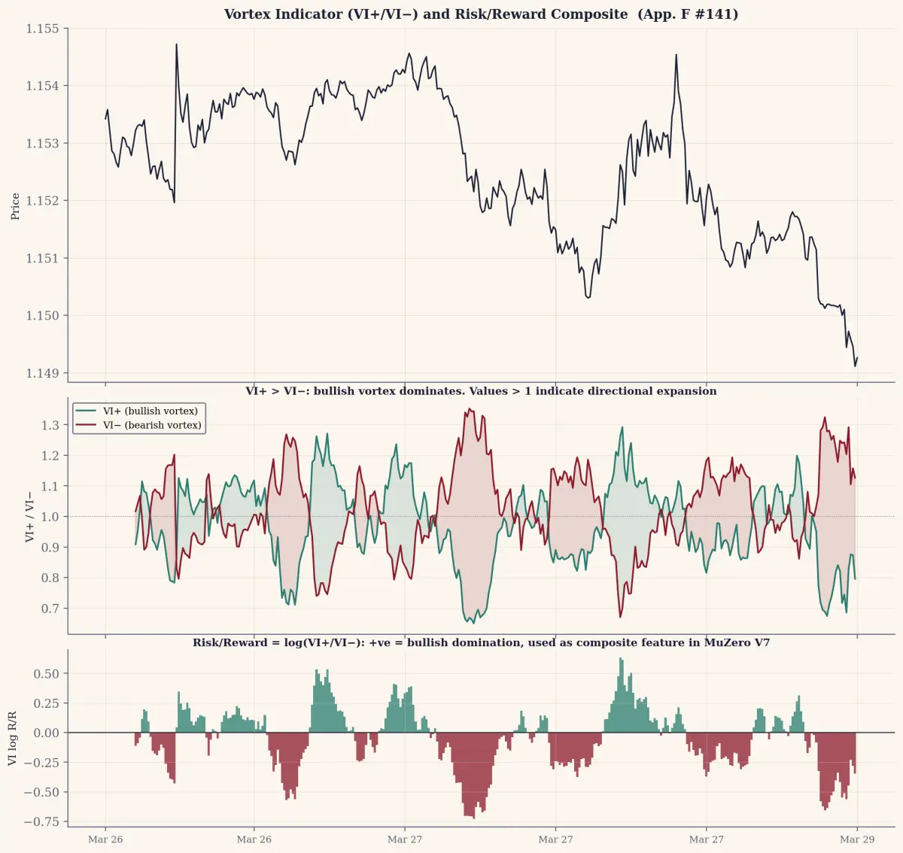
Vortex VI+ / VI− and their log-ratio risk/reward composite; VI+ above VI− marks bullish directional expansion. - Vortex Indicator Risk/RewardVortex Indicator Risk, Reward
- Volatility + direction composite: log ratio of positive to negative vortex movement. Strong positive = dominant bullish pressure, negative = bearish.
Show the chart
Vortex VI+ / VI− and their log-ratio risk/reward composite; VI+ above VI− marks bullish directional expansion.
WLetters
- Walk-forward (WF)Walk-forward, WF
- Split history into time-ordered chunks and require the strategy to be positive in each separately. A single lucky year then cannot carry the verdict; this project's NEAT runs demanded profitability in every chunk via a min(chunk_scores) fitness.
- Wavelet Scattering Transform (WST / SWT)Wavelet Scattering Transform, WST, SWT
- A multi-scale time-frequency decomposition of the price window (computed with kymatio's Scattering1D) that cascades wavelet transforms and modulus operations into a translation-invariant, deformation-stable representation of ~128 coefficients. Disambiguation: in this project the abbreviation WST means this transform; SWT is the name of the repository (new_swt) that used it, not a separate "stationary wavelet transform." A principled feature extractor — but a wide input that invites overfitting, and neither RL pipeline that consumed it ever reached positive expectancy on real prices.
- Weekend gap
- The week runs continuously Sunday ~17:00 NY to Friday 17:00, then stops; news accrues over the closed weekend and Monday reopens away from Friday's close — the gap. A stop is a tripwire on the tape, so across a gap it cannot fill inside the jump: it fills at the reopen, wherever that lands — which is why a weekend-held stop is not the protection it looks like.
- Wilder ASI (Incremental)Wilder ASI, Incremental
- Accumulative Swing Index — Wilder's 1978 formula. HSP/LSP detected on ASI curve rather than raw price for noise filtering.
Show the chart
Wilder's Accumulative Swing Index — a running swing-momentum line — with Bollinger bands on the ASI and RSI-of-ASI. Shown with related ASI derivatives. - Wilder CSI (Commodity Selection Index)Wilder CSI, Commodity Selection Index
- Cross-sectional pair ranking (trend + volatility + cost)
Show the chart
ADX(14) trend strength with +DI / −DI directional lines; ADX above 25 marks a trending regime. Shown with related directional features. - Williams %R
- An overbought/oversold oscillator reading where the close sits within the recent high-low range, scaled to [−100, 0].
Show the chart
TRIX, Fisher Transform and Williams %R sub-panels — the screened-oscillator group. - Win rate (WR)Win rate, WR
- The share of trades that closed in profit. A high win rate with no stop-loss is an accounting choice, not an achievement.
- WPCTL (windowed / winsorized percentile)WPCTL, windowed, winsorized percentile
- A robust house normalizer: map a value to its percentile within a rolling window after clipping the extreme tails, then optionally squash through arctan. More robust than a z-score for fat-tailed financial data.
- WPCTL (Winsorized Percentile)
- Robust normalization: clips extreme outliers at 0.1th/99.9th percentile, then maps to [-1,1].
- WST Features (128D)WST Features, 128D
- Wavelet-based multiscale representation
ZLetters
- ZigZag
- A pivot detector that marks a new swing only when price has reversed by at least a minimum threshold (about 30 pips here), filtering smaller wiggles. Like all swing detectors the final pivot is only confirmed in hindsight, so it is a context signal; in the swing-method bake-off its thresholded form lost money at every threshold tested.
Show the chart
The ZigZag swing skeleton over candles with the ordinal swing-regime encoding (HHHL uptrend … LHLL downtrend). Shown with related swing-structure features. - ZigZag Indicator
- Price-based swing detection with minimum swing filter. Foundation for HSP/LSP detection.
Show the chart
The ZigZag swing skeleton over candles with the ordinal swing-regime encoding (HHHL uptrend … LHLL downtrend). Shown with related swing-structure features. - Zone Recovery (ZR)Zone Recovery, ZR
- A grid/martingale hybrid: as price moves against the first entry, larger counter-positions are layered so any sufficient reversal closes the whole stack at a profit. The place where the edge and the tail are the same thing — 96% of the backtested profit lived in the rare deep (5+ leg) cycles, and every leg-cap that bounded the tail also destroyed the edge.
- zsarctan normalizer
- A two-step bounded normalizer: a rolling z-score taken against a fixed historical standard deviation (frozen, not recomputed forward), then squashed through arctan(x) · 2/π into [−1, +1]. The fixed-std choice is the load-bearing detail — recomputing the std over a growing window would leak the future.
No term matches that filter.